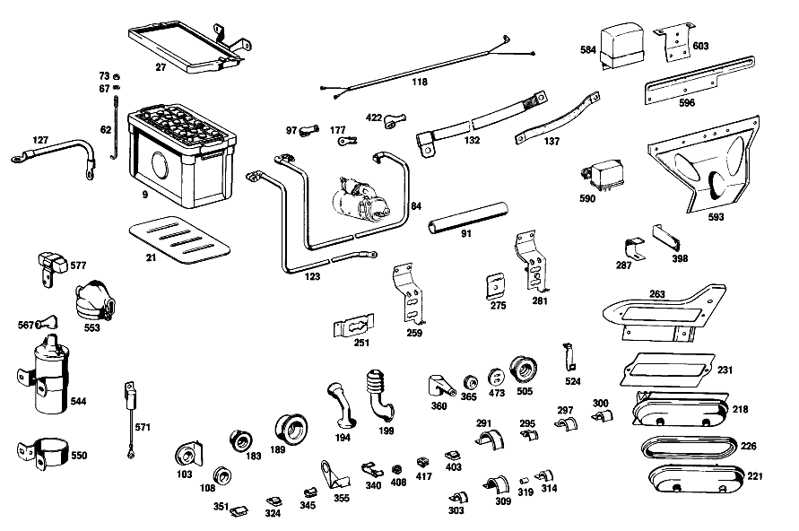

| № | Артикул | Название | Кол. | Примечание | Ограничение |
|---|---|---|---|---|---|
| 9 | A 002 541 99 01 | аккумуляторная батарея | 1 | 12V/70AH [021] UP TO CHASSIS 002860 ALSO INSTALLED ON 002864-002868,002898 | |
| 21 | A 110 541 01 35 | ПОЛ | 1 | КОРОБ АКБ [023] 018/12/52 UP TO CHASSIS 002860 ALSO INSTALLED ON 002864-002868,002898 | |
| 33 | A 114 540 01 73 | Держатель | 1 | Рулевое управление: ВлевоАвтоматическая коробка переключения передач [024] 018,12/52 FROM CHASSIS 002861 EXCEPT FOR 002864-002868,002898 | |
| 38 | A 000 990 94 91 | Гайкодержатель | 2 | Рулевое управление: ВлевоАвтоматическая коробка переключения передач [024] 018,12/52 FROM CHASSIS 002861 EXCEPT FOR 002864-002868,002898 | |
| 43 | N 000933 006130 | Винт | 2 | Рулевое управление: ВлевоАвтоматическая коробка переключения передач [024] 018,12/52 FROM CHASSIS 002861 EXCEPT FOR 002864-002868,002898 | |
| 47 | A 094 990 68 10 | Пружинное кольцо | 2 | Рулевое управление: ВлевоАвтоматическая коробка переключения передач [024] 018,12/52 FROM CHASSIS 002861 EXCEPT FOR 002864-002868,002898 | |
| 67 | A 094 990 68 10 | Пружинное кольцо | 2 | РАМА АКБ НА КОЛЕСН. АРКЕ | |
| 73 | N 000934 006013 | Гайка | - | ||
| 73 | N 304032 006008 | Шестигранная гайка | 2 | РАМА АКБ НА КОЛЕСН. АРКЕ | |
| 91 | A 000 546 29 30 | ИЗОЛИРУЮЩИЙ ШЛАНГ | - | НАД ПРОВОДОМ СТАРТЕРА И ОСНОВНЫМ ЖГУТОМ ЭЛЕКТРОПРОВОДКИ [402] БОЛЬШЕ НЕ ПОСТАВЛЯЕТСЯ | |
| 97 | A 111 546 00 35 | КОЛПАЧОК | - | ||
| 97 | A 116 546 01 35 | Защитный колпачок | 1 | ПЛЮС.ПРОВОД НА СТАРТЕРЕ | |
| 103 | A 000 546 08 37 | КАБ. ВТУЛКА | - | Рулевое управление: Влево | |
| 103 | A 000 546 09 37 | КАБ. ВТУЛКА | 1 | ПРОВОД СТАРТЕРА НА РАМКЕ АККУМУЛЯТОРНОЙ БАТАРЕИ Рулевое управление: Влево | |
| 113 | A 000 995 12 10 | ХОМУТ | 2 | ПРОВОД СТАРТЕРА Рулевое управление: ВлевоАвтоматическая коробка переключения передач [030] UP TO CHASSIS 005709 | |
| 137 | A 180 540 04 41 | Плоский провод массы | 1 | КАПОТ К ПЕРЕДН.ЧАСТИ | |
| 147 | A 000 545 47 28 | - Сцепление, механическое | 1 | СВЕТИЛЬНИК ПОТОЛКА | |
| 147 | A 008 545 20 28 | - Нижняя часть корпуса | 1 | 1 ШТ.; 1\-PIN | |
| 152 | A 002 545 49 28 | - ШТЕКЕР | - | ||
| 152 | A 008 545 37 28 | - Сцепление, механическое | 6 | STOP LIGHT SWITCH,PNEUM. SWITCH,HAND BRAKE CONTROL,GLOVE COMPARTMENT LAMP; 2\-PIN | |
| 152 | A 008 545 37 28 | - Сцепление, механическое | 1 | РЕГУЛИРОВКА ОТОПЛ.; 2\-PIN | |
| 152 | A 008 545 37 28 | - Сцепление, механическое | 1 | ВЫКЛЮЧ. KICK\-DOWN; 2\-PIN Рулевое управление: ВлевоАвтоматическая коробка переключения передач | |
| 152 | A 008 545 37 28 | - Сцепление, механическое | 1 | 2\-КОНТАКТН;ДОПОЛНИТЕЛЬНЫЙ ВЕНТИЛЯТОР; 2\-PIN | |
| 152 | A 008 545 37 28 | - Сцепление, механическое | 1 | ДАТЧИК ОБОРОТОВ; 2\-PIN | |
| 157 | A 004 545 86 28 | - Штекер | - | ||
| 157 | A 007 545 00 28 | - КОРПУС ШТЕК. ГНЕЗДА | - | ||
| 157 | A 015 545 49 28 | - КОРПУС ШТЕК. ГНЕЗДА | 2 | ОТОПИТ.ВЕНТИЛЯТ.; 4\-PIN | |
| 157 | A 015 545 49 28 | - КОРПУС ШТЕК. ГНЕЗДА | 5 | RELAY; 4\-POLE; 4\-PIN | |
| 157 | A 015 545 49 28 | - КОРПУС ШТЕК. ГНЕЗДА | 1 | TIME\-LAG SWITCH; 4\-PIN | |
| 157 | A 015 545 49 28 | - КОРПУС ШТЕК. ГНЕЗДА | 1 | ВЫКЛЮЧАТЕЛЬ БЛОКИРОВКИ ПУСКА ДВИГАТЕЛЯ; 4\-PIN | |
| 157 | A 015 545 49 28 | - КОРПУС ШТЕК. ГНЕЗДА | 1 | НАСОС СТЕКЛООМЫВ., 2 КОНТАКТ.; 4\-PIN | |
| 163 | A 005 545 13 28 | - ШТЕКЕР | - | ||
| 163 | A 006 545 80 28 | - CONTACT SUPPORT | 1 | МОТОР СТЕКЛООЧИСТИТЕЛЯ;6\-КОНТАКТН.; 6\-PIN | |
| 163 | A 006 545 80 28 | - CONTACT SUPPORT | 2 | БЛОК\-ФАРА; 6\-PIN | |
| 163 | A 006 545 80 28 | - CONTACT SUPPORT | 1 | ВЫКЛЮЧАТЕЛЬ АВАРИЙНОЙ СВЕТОВОЙ СИГНАЛИЗАЦИИ; 6\-PIN | |
| 167 | A 004 545 26 28 | - TS Сцепление | 1 | ВЫКЛЮЧАТЕЛЬ ЗАЖИГАНИЯ/СТАРТЕРА,8\-КОНТАКТН. | |
| 172 | A 002 545 35 28 | - ШТЕКЕР | - | ||
| 172 | A 009 545 26 28 | - Сцепление, механическое | 1 | ЖГУТ ПРОВОДКИ ЗАДН. ФОНАРЕЙ, 12\-КОНТАКТ.; 12\-PIN | |
| 172 | A 009 545 26 28 | - Сцепление, механическое | 1 | ЖГУТ ЭЛЕКТРОПРОВОДКИ ДВИГАТЕЛЯ; 12\-PIN | |
| 177 | A 000 546 34 40 | - КАБЕЛЬНЫЙ НАКОНЕЧНИК | 1 | Рулевое управление: ВлевоАвтоматическая коробка переключения передач | |
| 183 | A 111 997 01 81 | - втулка | 1 | SOLENOID SWITCH BRANCH\-OFF Рулевое управление: ВлевоАвтоматическая коробка переключения передач | |
| 194 | A 108 546 00 85 | - Защитная труба | 1 | ФАРА ПРАВАЯ | |
| 199 | A 110 546 00 85 | - Защитная труба | 1 | ФАРА ЛЕВАЯ | |
| 204 | A 000 544 04 86 | - ШТЕКЕР | 2 | ФАРА | |
| 207 | A 002 545 24 28 | - ШТЕКЕР | - | ||
| 207 | A 009 545 40 28 | - Сцепление, механическое | 1 | ПЛАФОН ПОТОЛОЧНЫЙ; 2\-PIN | |
| 211 | A 002 545 95 28 | - Корпус штекерной втулки | 1 | РЕГУЛЯТОР | |
| 215 | A 000 546 46 40 | - КАБЕЛЬНЫЙ НАКОНЕЧНИК | 3 | ||
| 218 | A 111 540 00 50 | - БЛОК ПРЕДОХРАНИТЕЛЕЙ | 1 | НА ПЕРЕГОРОДКЕ | |
| 221 | A 000 545 10 03 | - Крышка | 1 | ГНЕЗДО ПРЕДОХР. НА МОТОР.ЩИТЕ | |
| 226 | A 000 545 01 80 | - уплотнение | 1 | КРЫШКА БЛОКА ПРЕДОХРАНИТЕЛЕЙ | |
| 231 | A 000 545 15 80 | - ПРОКЛАДКА УПЛОТНИТЕЛЬНАЯ | 1 | ДЕРЖАТЕЛЬ ГНЕЗДА ПРЕДОХРАНИТЕЛЯ | |
| 237 | A 000 545 28 04 | - ВЫКЛЮЧАТЕЛЬ | 1 | ПОВОРОТНЫЙ ВЫКЛЮЧАТЕЛЬ СВЕТА [040] 018 UP TO CHASSIS 005328 EXCEPT FOR, SEE FOOTNOTE 42; 056 UP TO CHASSIS 004292 EXCEPT FOR, SEE FOOTNOTE 39 [042] 005253, 005267, 005274, 005309- 005312, 005314- 005327. [039] 004073, 004136, 004176, 004189, 004192- 004194, 004201, 004203, 004205, 004207- 004209, 004213- 004217, 004219- 004226, 004229- 004291. | |
| 242 | A 110 545 11 37 | - Поворотная кнопка | 1 | ПОВОРОТНЫЙ ВЫКЛЮЧАТЕЛЬ СВЕТА [402] БОЛЬШЕ НЕ ПОСТАВЛЯЕТСЯ [040] 018 UP TO CHASSIS 005328 EXCEPT FOR, SEE FOOTNOTE 42; 056 UP TO CHASSIS 004292 EXCEPT FOR, SEE FOOTNOTE 39 [042] 005253, 005267, 005274, 005309- 005312, 005314- 005327. [039] 004073, 004136, 004176, 004189, 004192- 004194, 004201, 004203, 004205, 004207- 004209, 004213- 004217, 004219- 004226, 004229- 004291. | |
| 246 | A 110 545 02 72 | - Декоративная розетка | 1 | ПОВОРОТНЫЙ ВЫКЛЮЧАТЕЛЬ СВЕТА | |
| 251 | A 108 637 06 14 | ДЕРЖАТЕЛЬ | 1 | СОЕДИНЕНИЕ ШТЕКЕРНОЕ Рулевое управление: ВлевоАвтоматическая коробка переключения передач [402] БОЛЬШЕ НЕ ПОСТАВЛЯЕТСЯ | |
| 255 | A 123 545 49 40 | Держатель | 1 | СОЕДИНЕНИЕ ШТЕКЕРНОЕ | |
| 259 | A 108 540 04 73 | ДЕРЖАТЕЛЬ | 1 | СОЕДИНЕНИЕ ШТЕКЕРНОЕ | |
| 263 | A 108 540 00 73 | ДЕРЖАТЕЛЬ | 1 | ГНЕЗДО ПРЕДОХР. НА МОТОР.ЩИТЕ Рулевое управление: Влево | |
| 275 | A 112 540 11 73 | ДЕРЖАТЕЛЬ | 5 | MAIN CABLE HARNESS TO FRONT CROSS MEMBER Рулевое управление: Влево | |
| 275 | A 112 540 11 73 | ДЕРЖАТЕЛЬ | 7 | Рулевое управление: Вправо | |
| 287 | A 108 546 02 43 | ДЕРЖАТЕЛЬ | 7 | MAIN CABLE HARNESS TO FRONT CROSS MEMBER | |
| 291 | A 136 995 01 37 | хомут | 1 | STARTING CABLE AND MAIN CABLE HARNESS TO FIRE WALL CENTER Рулевое управление: Вправо | |
| 291 | A 136 995 01 37 | хомут | 3 | КРЕПЛЕНИЕ ЖГУТА ЭЛЕКТРОПРОВОДКИ | |
| 297 | A 136 995 01 35 | хомут | 1 | КРЕПЛЕНИЕ ЖГУТА ЭЛЕКТРОПРОВОДКИ Рулевое управление: Влево | |
| 300 | A 112 995 01 20 | ХОМУТ | 2 | КРЕПЛЕНИЕ ЖГУТА ЭЛЕКТРОПРОВОДКИ Рулевое управление: Влево | |
| 303 | A 187 995 00 37 | хомут | 3 | MAIN CABLE HARNESS TO RIGHT SIDE MEMBER Рулевое управление: Влево [402] БОЛЬШЕ НЕ ПОСТАВЛЯЕТСЯ | |
| 314 | A 136 995 01 37 | хомут | 1 | MAIN CABLE HARNESS TO LEFT WHEEL ARCH PANEL | |
| 319 | A 108 546 02 53 | РАСПОРН. ТРУБКА | 5 | [402] БОЛЬШЕ НЕ ПОСТАВЛЯЕТСЯ | |
| 324 | A 001 988 10 78 | Скоба | 3 | ||
| 327 | A 000 995 00 68 | хомут | 2 | DOUBLE SOLENOID ELECTRIC CABLE Рулевое управление: ВправоАвтоматическая коробка переключения передач | |
| 332 | A 109 540 04 73 | ДЕРЖАТЕЛЬ | - | Рулевое управление: Вправо [014] 016 FROM CHASSIS 001859 ALSO INSTALLED ON 001473,001548,001702,001722,001786,001793,001797,001801,001804,001853,001857 [018] 018 FROM CHASSIS 002020 ALSO INSTALLED ON 001907,001911 [044] UP TO CHASSIS 005763 | |
| 336 | A 108 295 01 24 | БОЛТ НАТЯЖНОЙ | - | Рулевое управление: Вправо [014] 016 FROM CHASSIS 001859 ALSO INSTALLED ON 001473,001548,001702,001722,001786,001793,001797,001801,001804,001853,001857 [018] 018 FROM CHASSIS 002020 ALSO INSTALLED ON 001907,001911 [044] UP TO CHASSIS 005763 [415] ПРИМЕЧ. ПО ЗАМЕНЕ ПРИМЕНИМО ТОЛЬКО ДЛЯ СТОЯЩИХ РЯДОМ ПОЗИЦИЙ | |
| 345 | A 000 988 89 78 | Скоба | 5 | ||
| 351 | A 000 988 18 78 | Скоба | 3 | Рулевое управление: Вправо | |
| 370 | A 001 997 42 90 | связующее вещество | - | ||
| 370 | A 001 997 43 90 | Кабельная стяжка | 1 | 140mm; 9X250 MM | |
| 376 | A 114 997 02 90 | связующее вещество | - | ||
| 376 | A 114 997 05 90 | связующее вещество | NB | 160 MM; 9X210 MM | |
| 393 | A 000 304 00 40 | Держатель | 1 | CABLE TO SWITCH SOLENOID VALVE Автоматическая коробка переключения передач | |
| 398 | A 108 540 02 73 | ДЕРЖАТЕЛЬ | 1 | [017] UP TO CHASSIS 002019 EXCEPT FOR 001907,001911 | |
| 403 | A 000 988 33 78 | Скоба | 4 | LUGGAGE COMPARTMENT LAMP CABLE | |
| 408 | A 000 988 33 78 | Скоба | 2 | ||
| 417 | A 002 988 02 78 | Скоба | 3 | ||
| 422 | A 000 546 33 35 | Защитный колпачок | 1 | ЖГУТ ПРОВОДКИ НА ГЕНЕРАТОРЕ | |
| 427 | A 000 542 12 56 | КОРПУС | 1 | КОМБИНАЦИЯ ПРИБОРОВ | |
| 440 | A 000 542 09 78 | БЛОК ЗОЛОТНИКОВ | 1 | [019] UP TO CHASSIS 002898 EXCEPT FOR, SEE FOOTNOTE 54 [054] 002787, 002789, 002790, 002792, 002797, 002799- 002815, 002817- 002819, 002821, 002823- 002834, 002836, 002844, 002847, 002850- 002856, 002860, 002863, 002868, 002870- 002875, 002877- 002897. | |
| 443 | A 001 542 71 02 | МАНОМЕТР МАСЛА | 1 | ||
| 447 | A 003 542 14 05 | Дистанционный термометр | 1 | ГРАДУИРОВКА В ГРАДУСАХ ЦЕЛЬСИЯ | |
| 452 | A 001 542 08 03 | Указатель уровня топлива | 1 | ||
| 457 | A 000 542 15 25 | Переключатель | 1 | ||
| 462 | A 111 542 04 11 | ЧАСЫ | 1 | ||
| 466 | A 000 542 14 58 | НАКЛАДКА ЦИФЕРБЛАТА | 1 | ||
| 469 | A 108 542 00 80 | ПРОКЛАДКА УПЛОТНИТЕЛЬНАЯ | 1 | ||
| 473 | A 110 997 07 81 | резиновая втулка | 1 | ||
| 477 | A 000 545 35 09 | Переключатель | 1 | ВЫКЛЮЧАТЕЛЬ СИГНАЛА ТОРМОЖЕНИЯ | |
| 481 | A 000 545 96 11 | ВЫКЛЮЧАТЕЛЬ | - | [049] 018 UP TO CHASSIS 005978; 056 UP TO CHASSIS 007639 | |
| 487 | A 108 990 00 57 | Гайка с накаткой | 1 | ||
| 491 | A 000 545 40 19 | Оправа | 12 | ||
| 502 | A 002 988 60 78 | СКОБА | 1 | OIL PRESSURE GAUGE LINE THRU FIRE WALL Рулевое управление: Влево | |
| 512 | A 109 542 02 07 | Гибкий вал | 1 | 1300 MM Рулевое управление: ВлевоАвтоматическая коробка переключения передач | |
| 520 | A 108 997 03 81 | резиновая втулка | 1 | ВАЛ СПИДОМЕТРА НА МОТОРНОМ ЩИТЕ Рулевое управление: Влево | |
| 534 | A 003 542 10 20 | ЗВУКОВОЙ СИГНАЛ | 1 | 335 HZ | |
| 534 | A 003 542 16 20 | ЗВУКОВОЙ СИГНАЛ | 1 | 335 HZ | |
| 537 | A 003 542 07 20 | ЗВУКОВОЙ СИГНАЛ | 1 | 400 HZ | |
| 537 | A 003 542 17 20 | ЗВУКОВОЙ СИГНАЛ | 1 | 400 HZ | |
| 553 | A 000 158 11 85 | Защитная крышка | 1 | ||
| 584 | A 002 154 36 06 | Регулятор-выключатель | - | ||
| 584 | A 002 154 74 06 | Регулятор-выключатель | 1 | ||
| 590 | A 000 542 58 19 | Контактор | 3 | РЕГУЛИРОВАНИЕ СМЕШИВ. | |
| 590 | A 000 542 58 19 | Контактор | 1 | ДОПОЛН. ВЕНТИЛЯТОР | |
| 593 | A 108 542 00 40 | ДЕРЖАТЕЛЬ | 1 | ||
| 596 | A 109 541 02 40 | ДЕРЖАТЕЛЬ | 1 | ||
| 603 | A 108 821 06 14 | ДЕРЖАТЕЛЬ | 1 | ДОПОЛН. ВЕНТИЛЯТОР Рулевое управление: ВлевоАвтоматическая коробка переключения передач | |
| A 003 541 32 01 | АКБ | - | |||
| A 001 541 80 01 | аккумуляторная батарея | - | |||
| A 003 541 92 01 | аккумуляторная батарея | - | |||
| A 004 541 46 01 | аккумуляторная батарея | 1 | 88 AH; 12V/100AH | ||
| A 005 541 25 01 | аккумуляторная батарея | 1 | 88 AH; 12V/100AH [022] FROM CHASSIS 002861 EXCEPT FOR 002864-002868,002898 | ||
| A 000 989 06 15 | Электролит | 1 | [055] TO 001 541 10 01 | ||
| A 000 989 04 15 | КОМПЛ. КИСЛОТЫ АККУМУЛ. | - | |||
| A 000 989 13 15 | Электролит | 1 | [056] TO 000 541 74 01,001 541 09 01 | ||
| A 000 546 18 35 | КОЛПАЧОК | - | Рулевое управление: Влево | ||
| A 000 546 23 35 | Крышка клеммы | - | Рулевое управление: Влево | ||
| A 001 546 08 35 | Защитный колпачок | 1 | Рулевое управление: Влево | ||
| A 108 540 07 23 | РАМА КРЕПЛЕНИЯ | 1 | АКБ Рулевое управление: ВправоАвтоматическая коробка переключения передач | ||
| A 108 540 07 23 | РАМА КРЕПЛЕНИЯ | 1 | АКБ Рулевое управление: ВлевоАвтоматическая коробка переключения передач [023] 018/12/52 UP TO CHASSIS 002860 ALSO INSTALLED ON 002864-002868,002898 | ||
| A 120 541 01 24 | БОЛТ НАТЯЖНОЙ | 1 | Автоматическая коробка переключения передач | ||
| A 109 541 00 24 | БОЛТ НАТЯЖНОЙ | 1 | РАМА АКБ НА КОЛЕСН. АРКЕ Рулевое управление: ВправоАвтоматическая коробка переключения передач | ||
| A 109 540 01 30 | ПЛЮС. ПРОВОД | 1 | ПЛЮСОВОЙ ВЫВОД АКБ К СТАРТЕРУ Рулевое управление: ВлевоАвтоматическая коробка переключения передач | ||
| A 100 540 00 30 | ПЛЮС. ПРОВОД | 1 | ПЛЮСОВОЙ ВЫВОД АКБ К СТАРТЕРУ Рулевое управление: ВправоАвтоматическая коробка переключения передач | ||
| A 100 546 00 40 | - КАБЕЛЬНЫЙ НАКОНЕЧНИК | 1 | Автоматическая коробка переключения передач | ||
| A 123 995 03 20 | Крепежный хомут | 2 | STARTING CABLE TO BATTERY SUPPORT Рулевое управление: ВлевоАвтоматическая коробка переключения передач [021] UP TO CHASSIS 002860 ALSO INSTALLED ON 002864-002868,002898 | ||
| N 000933 006102 | Винт | - | Рулевое управление: ВлевоАвтоматическая коробка переключения передач | ||
| N 304017 006016 | Винт с 6-гранной головкой | 2 | STARTING CABLE TO BATTERY SUPPORT; M6X16 Рулевое управление: ВлевоАвтоматическая коробка переключения передач [021] UP TO CHASSIS 002860 ALSO INSTALLED ON 002864-002868,002898 | ||
| A 094 990 68 10 | Пружинное кольцо | 2 | STARTING CABLE TO BATTERY SUPPORT Рулевое управление: ВлевоАвтоматическая коробка переключения передач [021] UP TO CHASSIS 002860 ALSO INSTALLED ON 002864-002868,002898 | ||
| A 187 995 00 37 | хомут | 3 | STARTING CABLE TO BATTERY SUPPORT Рулевое управление: ВлевоАвтоматическая коробка переключения передач [022] FROM CHASSIS 002861 EXCEPT FOR 002864-002868,002898 [402] БОЛЬШЕ НЕ ПОСТАВЛЯЕТСЯ | ||
| N 007976 004216 | Шуруп | 3 | STARTING CABLE TO BATTERY SUPPORT; 4,8X13 Рулевое управление: ВлевоАвтоматическая коробка переключения передач [022] FROM CHASSIS 002861 EXCEPT FOR 002864-002868,002898 | ||
| A 180 997 15 82 | ШЛАНГ | 1 | НАД ПРОВОДОМ СТАРТЕРА И ОСНОВНЫМ ЖГУТОМ ЭЛЕКТРОПРОВОДКИ Рулевое управление: ВлевоАвтоматическая коробка переключения передач | ||
| A 111 546 01 35 | КОЛПАЧОК | 1 | ПЛЮС.ПРОВОД НА СТАРТЕРЕ Рулевое управление: ВлевоАвтоматическая коробка переключения передач | ||
| A 000 995 19 10 | ХОМУТ | 2 | ПРОВОД СТАРТЕРА Рулевое управление: ВлевоАвтоматическая коробка переключения передач [031] FROM CHASSIS 005710 | ||
| N 007976 004205 | Шуруп | 2 | ПРОВОД СТАРТЕРА Рулевое управление: ВлевоАвтоматическая коробка переключения передач | ||
| N 000933 005059 | Винт | - | Рулевое управление: ВлевоАвтоматическая коробка переключения передач | ||
| N 304017 005007 | Винт с 6-гранной головкой | 2 | ПРОВОД СТАРТЕРА; M5X12 Рулевое управление: ВлевоАвтоматическая коробка переключения передач | ||
| N 000000 002035 | Винт с 6-гр. глвк | 2 | ПРОВОД СТАРТЕРА; M5X12 Рулевое управление: ВлевоАвтоматическая коробка переключения передач | ||
| N 912004 005100 | Пружинное кольцо | 2 | ПРОВОД СТАРТЕРА Рулевое управление: ВлевоАвтоматическая коробка переключения передач | ||
| A 187 995 00 37 | хомут | 3 | MAIN CABLE HARNESS TO RIGHT SIDE MEMBER Рулевое управление: ВлевоАвтоматическая коробка переключения передач [402] БОЛЬШЕ НЕ ПОСТАВЛЯЕТСЯ | ||
| N 007976 004205 | Шуруп | 2 | MAIN CABLE HARNESS TO RIGHT SIDE MEMBER | ||
| A 100 540 00 31 | Электрический провод | 1 | ПРОВОД МАССЫ НА ЛОНЖЕРОНЕ | ||
| A 100 540 01 31 | ПРОВОД МАССЫ | 1 | ДВИГАТЕЛЬ К РАМЕ | ||
| A 111 540 00 41 | ГИБКАЯ ПЕРЕМЫЧКА | - | |||
| A 000 546 07 20 | ГИБКАЯ ПЕРЕМЫЧКА | 1 | ДВИГ. К РАДИАТОРУ | ||
| N 007976 004205 | Шуруп | 1 | КАПОТ К ПЕРЕДН.ЧАСТИ | ||
| N 009021 005202 | Шайба | - | |||
| N 009021 005205 | Шайба | 1 | КАПОТ К ПЕРЕДН.ЧАСТИ | ||
| N 000933 010238 | Винт | - | |||
| N 304017 010028 | Винт с 6-гранной головкой | 2 | NEGATIVE CABLE TO SIDE MEMBER AND TO FIRE WALL; M10X20\-8.8 | ||
| N 912004 010102 | Пружинное кольцо | 2 | NEGATIVE CABLE TO SIDE MEMBER AND TO FIRE WALL | ||
| N 000125 010518 | Шайба | - | |||
| N 000125 010532 | Шайба | 2 | NEGATIVE CABLE TO SIDE MEMBER AND TO FIRE WALL | ||
| A 109 540 14 05 | ЖГУТ ЭЛ.-ПРОВОДКИ | 1 | ГЛ. ЖГУТ ПРОВОДКИ Рулевое управление: ВлевоАвтоматическая коробка переключения передач [019] UP TO CHASSIS 002898 EXCEPT FOR, SEE FOOTNOTE 54 [054] 002787, 002789, 002790, 002792, 002797, 002799- 002815, 002817- 002819, 002821, 002823- 002834, 002836, 002844, 002847, 002850- 002856, 002860, 002863, 002868, 002870- 002875, 002877- 002897. | ||
| A 109 540 24 05 | ЖГУТ ЭЛ.-ПРОВОДКИ | 1 | ГЛ. ЖГУТ ПРОВОДКИ Рулевое управление: ВлевоАвтоматическая коробка переключения передач [020] FROM CHASSIS 002899 ALSO INSTALLED ON, SEE FOOTNOTE 54 [054] 002787, 002789, 002790, 002792, 002797, 002799- 002815, 002817- 002819, 002821, 002823- 002834, 002836, 002844, 002847, 002850- 002856, 002860, 002863, 002868, 002870- 002875, 002877- 002897. [032] UP TO CHASSIS 005328 | ||
| A 109 540 32 05 | ЖГУТ ЭЛ.-ПРОВОДКИ | 1 | ГЛ. ЖГУТ ПРОВОДКИ Рулевое управление: ВлевоАвтоматическая коробка переключения передач [033] FROM CHASSIS 005329 | ||
| A 109 540 13 05 | ЖГУТ ЭЛ.-ПРОВОДКИ | 1 | ГЛ. ЖГУТ ПРОВОДКИ Рулевое управление: ВправоАвтоматическая коробка переключения передач [019] UP TO CHASSIS 002898 EXCEPT FOR, SEE FOOTNOTE 54 [054] 002787, 002789, 002790, 002792, 002797, 002799- 002815, 002817- 002819, 002821, 002823- 002834, 002836, 002844, 002847, 002850- 002856, 002860, 002863, 002868, 002870- 002875, 002877- 002897. | ||
| A 109 540 25 05 | ЖГУТ ЭЛ.-ПРОВОДКИ | 1 | ГЛ. ЖГУТ ПРОВОДКИ Рулевое управление: ВправоАвтоматическая коробка переключения передач [020] FROM CHASSIS 002899 ALSO INSTALLED ON, SEE FOOTNOTE 54 [054] 002787, 002789, 002790, 002792, 002797, 002799- 002815, 002817- 002819, 002821, 002823- 002834, 002836, 002844, 002847, 002850- 002856, 002860, 002863, 002868, 002870- 002875, 002877- 002897. [032] UP TO CHASSIS 005328 | ||
| A 109 540 36 05 | ЖГУТ ЭЛ.-ПРОВОДКИ | 1 | ГЛ. ЖГУТ ПРОВОДКИ Рулевое управление: ВправоАвтоматическая коробка переключения передач [033] FROM CHASSIS 005329 | ||
| A 004 545 85 28 | - ШТЕКЕР | - | |||
| A 009 545 14 28 | - Верхняя часть корпуса | 1 | TO 008 545 20 28 | ||
| A 001 545 44 26 | - Контактная втулка | 1 | TO 008 545 20 28; 0.35\-6.0 MM2 RK4.0 | ||
| A 008 545 38 28 | - Верхняя часть корпуса | 10 | TO 008 545 37 28 | ||
| A 003 545 26 26 | - Контактная втулка | 20 | TO 008 545 37 28; 0.35\-4.0 MM2 RK4 | ||
| A 003 545 47 28 | - ШТЕКЕР | - | |||
| A 008 545 08 28 | - Корпус штекерной втулки | 2 | КОНТРОЛЬ ТОРМОЗ. ЖИДКОСТИ; 2\-PIN RK4 | ||
| A 008 545 11 28 | - Крышка | 2 | TO 008 545 08 28; 2\-PIN RK4. | ||
| A 001 545 44 26 | - Контактная втулка | 4 | TO 008 545 08 28; 0.35\-6.0 MM2 RK4.0 | ||
| A 004 545 92 28 | - Сцепление, механическое | 1 | ALTERNATOR,3\-POLE | ||
| A 009 545 21 28 | - Крышка | 10 | TO 007 545 00 28 | ||
| A 003 545 26 26 | - Контактная втулка | NB | TO 007 545 00 28; 0.35\-4.0 MM2 RK4 | ||
| A 009 545 30 28 | - Верхняя часть корпуса | 4 | TO 006 545 80 28 | ||
| A 004 545 65 28 | - ШТЕКЕР | - | |||
| A 009 545 94 28 | - Корпус штекерной втулки | 1 | ПЯТИПОЛЮСНЫЙ | ||
| A 009 545 95 28 | - Штекер | 1 | TO 009 545 94 28 | ||
| A 004 545 66 28 | - Контактная втулка | 5 | TO 009 545 94 28 | ||
| A 009 545 24 28 | - Сцепление, механическое | 2 | TO 009 545 26 28 | ||
| A 003 545 26 26 | - Контактная втулка | NB | TO 006 545 80 28,009 545 26 28; 0.35\-4.0 MM2 RK4 | ||
| A 009 545 23 28 | Корпус штекерной втулки | 1 | STEERING COLUMN MOUNTED CABLE HARNESS, 14\-POLE; 14\-PIN | ||
| A 010 545 04 28 | Корпус штекерной втулки | 1 | КОМБИНАЦИЯ ПРИБОРОВ,15\-КОНТАКТ. | ||
| A 010 545 05 28 | - Крышка | 1 | TO 010 545 04 28 | ||
| A 002 545 99 26 | - Контактная втулка | 15 | TO 010 545 04 28; 0.35\-2.5 MM2 RK2.5 | ||
| A 000 546 42 40 | - Соединитель проводов | 1 | Рулевое управление: Влево | ||
| A 000 546 42 40 | Соединитель проводов | 2 | Рулевое управление: ВправоАвтоматическая коробка переключения передач | ||
| A 115 997 07 81 | - резиновая втулка | 1 | МОТОРНЫЙ ЩИТ | ||
| A 111 997 16 81 | - КАБ. ВТУЛКА | 1 | МОТОРНЫЙ ЩИТ Рулевое управление: ВправоАвтоматическая коробка переключения передач | ||
| A 000 997 28 81 | - Проходная втулка | 1 | РЕГУЛИРУЮЩИЙ ВЫКЛЮЧАТЕЛЬ ГЕНЕРАТОРА | ||
| A 000 546 08 45 | - Изоляционная втулка | 2 | ТЕРМОВЫКЛЮЧАТЕЛЬ [036] FROM CHASSIS 005042 | ||
| A 000 546 43 40 | - ПЛОСКИЙ ШТЕКЕР | 2 | ТЕРМОВЫКЛЮЧАТЕЛЬ; 1\-2.5 MM2 [036] FROM CHASSIS 005042 | ||
| A 108 540 03 50 | - БЛОК ПРЕДОХРАНИТЕЛЕЙ | - | |||
| A 000 545 29 04 | - Переключатель | 1 | ПОВОРОТНЫЙ ВЫКЛЮЧАТЕЛЬ СВЕТА [040] 018 UP TO CHASSIS 005328 EXCEPT FOR, SEE FOOTNOTE 42; 056 UP TO CHASSIS 004292 EXCEPT FOR, SEE FOOTNOTE 39 [042] 005253, 005267, 005274, 005309- 005312, 005314- 005327. [039] 004073, 004136, 004176, 004189, 004192- 004194, 004201, 004203, 004205, 004207- 004209, 004213- 004217, 004219- 004226, 004229- 004291. | ||
| N 007985 004136 | - Винт | 10 | ЭЛ. ПРОВОД НА ПОВОРОТ. ВЫКЛ\-ЛЕ СВЕТОТЕХНИКИ; M4X12 | ||
| N 006797 004232 | - Зубчатая шайба | 10 | ЭЛ. ПРОВОД НА ПОВОРОТ. ВЫКЛ\-ЛЕ СВЕТОТЕХНИКИ | ||
| A 000 545 37 04 | - Переключатель света | 1 | ПОВОРОТНЫЙ ВЫКЛЮЧАТЕЛЬ СВЕТА [402] БОЛЬШЕ НЕ ПОСТАВЛЯЕТСЯ [041] 018 FROM CHASSIS 005329 ALSO INSTALLED ON, SEE FOOTNOTE 42; 056 FROM CHASSIS 004293 ALSO INSTALLED ON, SEE FOOTNOTE 39 [042] 005253, 005267, 005274, 005309- 005312, 005314- 005327. [039] 004073, 004136, 004176, 004189, 004192- 004194, 004201, 004203, 004205, 004207- 004209, 004213- 004217, 004219- 004226, 004229- 004291. | ||
| A 115 540 05 83 | - РУЧКА | 1 | ПОВОРОТНЫЙ ВЫКЛЮЧАТЕЛЬ СВЕТА [041] 018 FROM CHASSIS 005329 ALSO INSTALLED ON, SEE FOOTNOTE 42; 056 FROM CHASSIS 004293 ALSO INSTALLED ON, SEE FOOTNOTE 39 [042] 005253, 005267, 005274, 005309- 005312, 005314- 005327. [039] 004073, 004136, 004176, 004189, 004192- 004194, 004201, 004203, 004205, 004207- 004209, 004213- 004217, 004219- 004226, 004229- 004291. | ||
| A 000 545 23 45 | - Защитный колпачок | 1 | ПЕРЕКЛЮЧАТЕЛЬ СВЕТА [041] 018 FROM CHASSIS 005329 ALSO INSTALLED ON, SEE FOOTNOTE 42; 056 FROM CHASSIS 004293 ALSO INSTALLED ON, SEE FOOTNOTE 39 [042] 005253, 005267, 005274, 005309- 005312, 005314- 005327. [039] 004073, 004136, 004176, 004189, 004192- 004194, 004201, 004203, 004205, 004207- 004209, 004213- 004217, 004219- 004226, 004229- 004291. | ||
| A 000 545 22 45 | - Защитный колпачок | 1 | ПЕРЕКЛЮЧАТЕЛЬ СВЕТА [041] 018 FROM CHASSIS 005329 ALSO INSTALLED ON, SEE FOOTNOTE 42; 056 FROM CHASSIS 004293 ALSO INSTALLED ON, SEE FOOTNOTE 39 [042] 005253, 005267, 005274, 005309- 005312, 005314- 005327. [039] 004073, 004136, 004176, 004189, 004192- 004194, 004201, 004203, 004205, 004207- 004209, 004213- 004217, 004219- 004226, 004229- 004291. | ||
| N 007976 004205 | Шуруп | 2 | КРОНШТЕЙН НА СТОЙКЕ ПЕРЕДНЕЙ СТЕНКИ | ||
| A 108 545 02 40 | ДЕРЖАТЕЛЬ | - | |||
| A 000 545 82 34 | предохранитель | - | |||
| N 072581 008101 | Плавкая вставка | 10 | |||
| N 072581 025100 | ПРЕДОХРАНИТЕЛЬ | 2 | |||
| A 108 545 01 40 | ДЕРЖАТЕЛЬ | 1 | ГНЕЗДО ПРЕДОХР. НА МОТОР.ЩИТЕ Рулевое управление: Вправо | ||
| N 007985 004136 | Винт | 2 | ГНЕЗДО ПРЕДОХР. НА МОТОР.ЩИТЕ; M4X12 | ||
| N 000137 004202 | Пружинная шайба | 2 | ГНЕЗДО ПРЕДОХР. НА МОТОР.ЩИТЕ | ||
| A 108 546 04 43 | ДЕРЖАТЕЛЬ | 2 | MAIN CABLE HARNESS TO FRONT CROSS MEMBER Рулевое управление: ВправоАвтоматическая коробка переключения передач | ||
| N 007976 004205 | Шуруп | 9 | КРЕПЛЕНИЕ КРОНШТЕЙНА | ||
| N 000933 006102 | Винт | - | |||
| N 304017 006016 | Винт с 6-гранной головкой | 1 | КРЕПЛЕНИЕ КРОНШТЕЙНА; M6X16 | ||
| A 094 990 68 10 | Пружинное кольцо | 1 | КРЕПЛЕНИЕ КРОНШТЕЙНА | ||
| A 123 995 03 20 | Крепежный хомут | 2 | ПРОВОД СТАРТЕРА НА РАМКЕ АККУМУЛЯТОРНОЙ БАТАРЕИ Рулевое управление: Влево | ||
| A 187 995 00 37 | хомут | 1 | ELECTRIC CABLE OF DECLUTCHING START START SWITCH AND BACK\-UP LIGHT SWITCH Рулевое управление: Вправо [402] БОЛЬШЕ НЕ ПОСТАВЛЯЕТСЯ | ||
| N 007976 004211 | Шуруп | 5 | КРЕПЛЕНИЕ ЖГУТА ЭЛЕКТРОПРОВОДКИ; 4,8X25 | ||
| N 007976 004205 | Шуруп | 1 | Рулевое управление: Вправо | ||
| N 000933 004030 | Винт | 3 | |||
| N 912004 004102 | Пружинное кольцо | 3 | |||
| N 000934 004006 | Гайка | 3 | |||
| N 000933 006103 | Винт | - | Рулевое управление: Вправо | ||
| N 304017 006018 | Винт с 6-гранной головкой | 1 | M6X12 Рулевое управление: Вправо | ||
| N 000933 006102 | Винт | - | Рулевое управление: Вправо | ||
| N 304017 006016 | Винт с 6-гранной головкой | 1 | M6X16 Рулевое управление: Вправо | ||
| A 094 990 68 10 | Пружинное кольцо | 2 | Рулевое управление: Вправо | ||
| N 000934 006013 | Гайка | - | Рулевое управление: Вправо | ||
| N 304032 006008 | Шестигранная гайка | 1 | Рулевое управление: Вправо | ||
| A 000 990 38 91 | ГАЙКОДЕРЖАТЕЛЬ | - | Рулевое управление: Вправо | ||
| A 000 990 39 31 | БОЛТ | 1 | Рулевое управление: Вправо [402] БОЛЬШЕ НЕ ПОСТАВЛЯЕТСЯ | ||
| A 000 995 76 01 | хомут | 1 | DOUBLE SOLENOID ELECTRIC CABLE Рулевое управление: ВправоАвтоматическая коробка переключения передач | ||
| N 007981 004250 | Шуруп | 1 | DOUBLE SOLENOID ELECTRIC CABLE; 4.2X25 Рулевое управление: ВправоАвтоматическая коробка переключения передач | ||
| A 003 988 08 78 | СКОБА | 1 | MAIN CABLE HARNESS TO BRAKE BOOSTER Рулевое управление: Вправо [045] FROM CHASSIS 005764 | ||
| A 094 990 68 10 | Пружинное кольцо | 1 | MAIN CABLE HARNESS TO BRAKE BOOSTER Рулевое управление: Вправо [014] 016 FROM CHASSIS 001859 ALSO INSTALLED ON 001473,001548,001702,001722,001786,001793,001797,001801,001804,001853,001857 [018] 018 FROM CHASSIS 002020 ALSO INSTALLED ON 001907,001911 [046] 018 UP TO CHASSIS 005763 | ||
| N 000934 006013 | Гайка | - | Рулевое управление: Вправо | ||
| N 304032 006008 | Шестигранная гайка | 1 | MAIN CABLE HARNESS TO BRAKE BOOSTER Рулевое управление: Вправо [014] 016 FROM CHASSIS 001859 ALSO INSTALLED ON 001473,001548,001702,001722,001786,001793,001797,001801,001804,001853,001857 [018] 018 FROM CHASSIS 002020 ALSO INSTALLED ON 001907,001911 [046] 018 UP TO CHASSIS 005763 | ||
| A 000 988 34 78 | Скоба | 2 | Рулевое управление: Вправо | ||
| A 114 997 01 90 | Кабельная стяжка | NB | 80mm; 80mm | ||
| A 001 997 41 90 | Кабельная стяжка | NB | 100 MM; 7X100 MM | ||
| A 001 997 43 90 | Кабельная стяжка | NB | 250 MM; 9X250 MM | ||
| A 000 987 32 72 | ЗАЩИТА КРОМОК | - | |||
| A 002 987 35 72 | ЗАЩИТА КРОМОК | 2 | |||
| A 109 540 03 07 | ЖГУТ ЭЛ.-ПРОВОДКИ | 1 | ЗАДН.ЛАМПЫ Рулевое управление: Влево [040] 018 UP TO CHASSIS 005328 EXCEPT FOR, SEE FOOTNOTE 42; 056 UP TO CHASSIS 004292 EXCEPT FOR, SEE FOOTNOTE 39 [042] 005253, 005267, 005274, 005309- 005312, 005314- 005327. [039] 004073, 004136, 004176, 004189, 004192- 004194, 004201, 004203, 004205, 004207- 004209, 004213- 004217, 004219- 004226, 004229- 004291. | ||
| A 109 540 07 07 | ЖГУТ ЭЛ.-ПРОВОДКИ | 1 | ЗАДН.ЛАМПЫ Рулевое управление: Влево [041] 018 FROM CHASSIS 005329 ALSO INSTALLED ON, SEE FOOTNOTE 42; 056 FROM CHASSIS 004293 ALSO INSTALLED ON, SEE FOOTNOTE 39 [042] 005253, 005267, 005274, 005309- 005312, 005314- 005327. [039] 004073, 004136, 004176, 004189, 004192- 004194, 004201, 004203, 004205, 004207- 004209, 004213- 004217, 004219- 004226, 004229- 004291. | ||
| A 109 540 04 07 | ЖГУТ ЭЛ.-ПРОВОДКИ | 1 | ЗАДН.ЛАМПЫ Рулевое управление: Вправо [040] 018 UP TO CHASSIS 005328 EXCEPT FOR, SEE FOOTNOTE 42; 056 UP TO CHASSIS 004292 EXCEPT FOR, SEE FOOTNOTE 39 [042] 005253, 005267, 005274, 005309- 005312, 005314- 005327. [039] 004073, 004136, 004176, 004189, 004192- 004194, 004201, 004203, 004205, 004207- 004209, 004213- 004217, 004219- 004226, 004229- 004291. | ||
| A 109 540 09 07 | ЖГУТ ЭЛ.-ПРОВОДКИ | 1 | ЗАДН.ЛАМПЫ Рулевое управление: Вправо [041] 018 FROM CHASSIS 005329 ALSO INSTALLED ON, SEE FOOTNOTE 42; 056 FROM CHASSIS 004293 ALSO INSTALLED ON, SEE FOOTNOTE 39 [042] 005253, 005267, 005274, 005309- 005312, 005314- 005327. [039] 004073, 004136, 004176, 004189, 004192- 004194, 004201, 004203, 004205, 004207- 004209, 004213- 004217, 004219- 004226, 004229- 004291. | ||
| A 111 997 15 81 | - резиновая втулка | 1 | BRANCH\-OFF TO LUGGAGE COMPARTMENT TO REAR LID | ||
| A 002 545 49 28 | - ШТЕКЕР | - | |||
| A 008 545 37 28 | - Сцепление, механическое | 1 | ОСВЕЩЕНИЕ БАГАЖНИКА; 2\-PIN | ||
| A 008 545 38 28 | - Верхняя часть корпуса | 1 | TO 008 545 37 28 | ||
| A 004 545 86 28 | - Штекер | - | |||
| A 007 545 00 28 | - КОРПУС ШТЕК. ГНЕЗДА | - | |||
| A 015 545 49 28 | - КОРПУС ШТЕК. ГНЕЗДА | 1 | УСТР.БАКА;4\-КОНТАКТ.; 4\-PIN | ||
| A 009 545 21 28 | - Крышка | 1 | TO 007 545 00 28 | ||
| A 005 545 13 28 | - ШТЕКЕР | - | |||
| A 006 545 80 28 | - CONTACT SUPPORT | 2 | TAIL LAMP CABLE HARNESS COUPLER; 6\-PIN | ||
| A 009 545 30 28 | - Верхняя часть корпуса | 2 | TO 006 545 80 28 | ||
| A 003 545 26 26 | - Контактная втулка | NB | 4 MM; 0.35\-4.0 MM2 RK4 | ||
| A 002 545 26 28 | - ШТЕКЕР | - | |||
| A 009 545 54 28 | - Сцепление, механическое | 1 | ЖГУТ ПРОВОДКИ ЗАДН. ФОНАРЕЙ, 12\-КОНТАКТ.; 12\-PIN | ||
| N 007985 004123 | Винт | 1 | CABLE TO SWITCH SOLENOID VALVE; M4X6 Автоматическая коробка переключения передач | ||
| N 007976 004205 | Шуруп | 1 | [017] UP TO CHASSIS 002019 EXCEPT FOR 001907,001911 | ||
| A 000 988 17 78 | СКОБА | 4 | LUGGAGE COMPARTMENT LAMP CABLE | ||
| A 002 988 69 78 | СКОБА | 1 | CABLE CONNECTOR TO KICK\-DOWN SWITCH Рулевое управление: Влево | ||
| N 000934 006013 | Гайка | - | |||
| N 304032 006008 | Шестигранная гайка | 1 | ЖГУТ ПРОВОДКИ НА ГЕНЕРАТОРЕ | ||
| N 000137 006204 | Пружинная шайба | 1 | ЖГУТ ПРОВОДКИ НА ГЕНЕРАТОРЕ | ||
| A 112 257 04 90 | Щиток | 1 | KICK\-DOWN SWITCH CABLE TO TOEBOARD Автоматическая коробка переключения передач [017] UP TO CHASSIS 002019 EXCEPT FOR 001907,001911 | ||
| N 007976 004205 | Шуруп | 2 | KICK\-DOWN SWITCH CABLE TO TOEBOARD Автоматическая коробка переключения передач [017] UP TO CHASSIS 002019 EXCEPT FOR 001907,001911 | ||
| A 002 988 48 78 | Скоба | 1 | KICK\-DOWN SWITCH CABLE TO TOEBOARD Автоматическая коробка переключения передач [017] UP TO CHASSIS 002019 EXCEPT FOR 001907,001911 | ||
| A 006 542 42 06 | СПИДОМЕТР | 1 | КИЛОМЕТРОВАЯ ШКАЛА [019] UP TO CHASSIS 002898 EXCEPT FOR, SEE FOOTNOTE 54 [054] 002787, 002789, 002790, 002792, 002797, 002799- 002815, 002817- 002819, 002821, 002823- 002834, 002836, 002844, 002847, 002850- 002856, 002860, 002863, 002868, 002870- 002875, 002877- 002897. | ||
| A 006 542 96 06 | СПИДОМЕТР | 1 | КИЛОМЕТРОВАЯ ШКАЛА [020] FROM CHASSIS 002899 ALSO INSTALLED ON, SEE FOOTNOTE 54 [054] 002787, 002789, 002790, 002792, 002797, 002799- 002815, 002817- 002819, 002821, 002823- 002834, 002836, 002844, 002847, 002850- 002856, 002860, 002863, 002868, 002870- 002875, 002877- 002897. | ||
| A 000 542 73 16 | ДАТЧИК ОБОРОТОВ | 1 | |||
| A 000 542 15 78 | БЛОК ЗОЛОТНИКОВ | 1 | [020] FROM CHASSIS 002899 ALSO INSTALLED ON, SEE FOOTNOTE 54 [054] 002787, 002789, 002790, 002792, 002797, 002799- 002815, 002817- 002819, 002821, 002823- 002834, 002836, 002844, 002847, 002850- 002856, 002860, 002863, 002868, 002870- 002875, 002877- 002897. | ||
| N 000084 003104 | Винт | 2 | МАНОМЕТР МАСЛА | ||
| N 000084 003101 | Винт | 2 | ТЕРМОМЕТР ОЖ | ||
| N 006797 012250 | Зубчатая шайба | 1 | STOP LIGHT SWITCH TO PEDAL ASSEMBLY | ||
| A 000 990 92 51 | гайка | 1 | STOP LIGHT SWITCH TO PEDAL ASSEMBLY | ||
| A 001 545 02 11 | Переключатель | 1 | HAND BRAKE TELL\-TALE LAMP [050] 018 FROM CHASSIS 005979; 056 FROM CHASSIS 007640 | ||
| A 001 990 67 51 | ГАЙКА | - | |||
| A 000 252 03 72 | гайка | 1 | [050] 018 FROM CHASSIS 005979; 056 FROM CHASSIS 007640 | ||
| N 000137 008204 | Пружинная шайба | - | |||
| N 000137 008212 | Пружинная шайба | 1 | [050] 018 FROM CHASSIS 005979; 056 FROM CHASSIS 007640 | ||
| A 094 988 15 00 | Скоба | 1 | CABLE TO BRAKE BOOSTER | ||
| N 000934 004006 | Гайка | 1 | ДАТЧИК УРОВНЯ ТОПЛИВА | ||
| N 000433 004307 | Шайба | 1 | ДАТЧИК УРОВНЯ ТОПЛИВА | ||
| N 006797 004232 | Зубчатая шайба | 1 | ДАТЧИК УРОВНЯ ТОПЛИВА | ||
| A 000 544 67 94 | ЛАМПА НАКАЛИВ. | - | |||
| N 072601 012240 | Лампа накаливания | 12 | |||
| A 109 542 00 44 | ТРУБОПРОВОД | 1 | МАНОМЕТР МАСЛА Рулевое управление: ВлевоАвтоматическая коробка переключения передач | ||
| A 109 542 01 44 | ТРУБОПРОВОД | 1 | МАНОМЕТР МАСЛА Рулевое управление: ВправоАвтоматическая коробка переключения передач | ||
| A 110 997 07 81 | резиновая втулка | 1 | |||
| A 109 542 03 07 | ВАЛ ГИБКИЙ | 1 | 1900 MM Рулевое управление: ВправоАвтоматическая коробка переключения передач | ||
| A 111 997 14 81 | резиновая втулка | 1 | ВАЛ СПИДОМЕТРА НА МОТОРНОМ ЩИТЕ Рулевое управление: Вправо | ||
| A 109 988 00 78 | СКОБА | 1 | КРЕПЛЕНИЕ ГИБК. ВАЛА Рулевое управление: Вправо | ||
| N 000084 004156 | Винт | 6 | ЭЛ. ПРОВОД НА РОЖКЕ | ||
| N 912004 004102 | Пружинное кольцо | 6 | ЭЛ. ПРОВОД НА РОЖКЕ | ||
| N 000933 008131 | Винт | - | |||
| N 304017 008016 | Винт с 6-гранной головкой | 2 | HORN TO STRUT; M8X16 | ||
| N 912004 008102 | Пружинное кольцо | 2 | HORN TO STRUT | ||
| N 000933 008131 | Винт | - | |||
| N 304017 008016 | Винт с 6-гранной головкой | 1 | HORN TO REINFORCEMENT ANGLE; M8X16 | ||
| N 912004 008102 | Пружинное кольцо | 1 | HORN TO REINFORCEMENT ANGLE | ||
| N 000934 008013 | Гайка | 1 | HORN TO REINFORCEMENT ANGLE | ||
| A 000 158 11 85 | Защитная крышка | 1 | |||
| N 000933 006103 | Винт | - | |||
| N 304017 006018 | Винт с 6-гранной головкой | 2 | REGULATOR AND CUT\-OUT TO BRACKET; M6X12 | ||
| A 094 990 68 10 | Пружинное кольцо | 2 | REGULATOR AND CUT\-OUT TO BRACKET | ||
| A 109 542 04 40 | ДЕРЖАТЕЛЬ | 1 | Рулевое управление: ВлевоАвтоматическая коробка переключения передач [017] UP TO CHASSIS 002019 EXCEPT FOR 001907,001911 | ||
| A 109 540 06 73 | ДЕРЖАТЕЛЬ | 1 | Рулевое управление: ВлевоАвтоматическая коробка переключения передач [018] 018 FROM CHASSIS 002020 ALSO INSTALLED ON 001907,001911 | ||
| A 109 540 03 73 | ДЕРЖАТЕЛЬ | 1 | Рулевое управление: ВправоАвтоматическая коробка переключения передач | ||
| A 109 542 08 40 | ДЕРЖАТЕЛЬ | 1 | Рулевое управление: ВправоАвтоматическая коробка переключения передач | ||
| N 007981 004318 | Шуруп | 2 | 4,2X9,5 [017] UP TO CHASSIS 002019 EXCEPT FOR 001907,001911 | ||
| N 000933 004045 | Винт | 2 | M4X18 [017] UP TO CHASSIS 002019 EXCEPT FOR 001907,001911 | ||
| N 912004 004102 | Пружинное кольцо | 2 | [017] UP TO CHASSIS 002019 EXCEPT FOR 001907,001911 | ||
| N 000934 004006 | Гайка | 2 | [017] UP TO CHASSIS 002019 EXCEPT FOR 001907,001911 | ||
| N 000933 006102 | Винт | - | |||
| N 304017 006016 | Винт с 6-гранной головкой | 2 | ДЕРЖАТЕЛЬ НА КОЛЕСН. АРКЕ; M6X16 | ||
| N 009021 006205 | Шайба | - | |||
| N 009021 006208 | Шайба | 2 | ДЕРЖАТЕЛЬ НА КОЛЕСН. АРКЕ; 6 MM | ||
| A 094 990 68 10 | Пружинное кольцо | 2 | ДЕРЖАТЕЛЬ НА КОЛЕСН. АРКЕ | ||
| A 000 990 27 91 | ГАЙКОДЕРЖАТЕЛЬ | - | |||
| A 000 990 22 91 | ГАЙКОДЕРЖАТЕЛЬ | - | |||
| A 001 990 67 91 | Гайкодержатель | 2 | BRACKET TO WHEELHOUSE PANEL [415] ПРИМЕЧ. ПО ЗАМЕНЕ ПРИМЕНИМО ТОЛЬКО ДЛЯ СТОЯЩИХ РЯДОМ ПОЗИЦИЙ | ||
| N 007981 004342 | Шуруп | 10 | РЕЛЕ НА ДЕРЖАТ. Рулевое управление: Влево | ||
| N 007981 004342 | Шуруп | 10 | Рулевое управление: Вправо | ||
| N 007976 004211 | Шуруп | 1 | ДЕРЖАТЕЛЬ НА ПЕРЕГОРОДКЕ; 4,8X25 Рулевое управление: ВправоАвтоматическая коробка переключения передач | ||
| A 108 820 40 15 | ЭЛ. ПРОВОД | 1 | ДОПОЛН. ВЕНТИЛЯТОР Рулевое управление: ВлевоАвтоматическая коробка переключения передач | ||
| A 108 820 45 15 | ЭЛ. ПРОВОД | 1 | ДОПОЛН. ВЕНТИЛЯТОР Рулевое управление: ВправоАвтоматическая коробка переключения передач | ||
| A 004 545 86 28 | - Штекер | - | |||
| A 007 545 00 28 | КОРПУС ШТЕК. ГНЕЗДА | - | |||
| A 015 545 49 28 | КОРПУС ШТЕК. ГНЕЗДА | 1 | RELAY; 4\-POLE; 4\-PIN | ||
| A 009 545 21 28 | - Крышка | 1 | TO 007 545 00 28 | ||
| A 002 545 49 28 | - ШТЕКЕР | - | |||
| A 008 545 37 28 | Сцепление, механическое | 1 | 2\-КОНТАКТН;ДОПОЛНИТЕЛЬНЫЙ ВЕНТИЛЯТОР; 2\-PIN | ||
| A 008 545 37 28 | Сцепление, механическое | 1 | ВЫКЛЮЧАТЕЛЬ; 2\-PIN | ||
| A 008 545 38 28 | - Верхняя часть корпуса | 2 | TO 008 545 37 28 | ||
| A 003 545 26 26 | - Контактная втулка | 8 | TO 007 545 00 28,008 545 37 28; 0.35\-4.0 MM2 RK4 | ||
| A 004 545 85 28 | - ШТЕКЕР | - | |||
| A 008 545 20 28 | - Нижняя часть корпуса | 1 | ТЕМПЕР.ВЫКЛЮЧ. 100 ГРАДУСОВ; 1\-PIN | ||
| A 009 545 14 28 | - Верхняя часть корпуса | 1 | TO 008 545 20 28 | ||
| A 001 545 44 26 | - Контактная втулка | 1 | TO 008 545 20 28; 0.35\-6.0 MM2 RK4.0 | ||
| N 007976 004205 | Шуруп | 2 | ДОПОЛН. ВЕНТИЛЯТОР Рулевое управление: ВлевоАвтоматическая коробка переключения передач | ||
| A 000 545 99 01 | Закр. блок предохр. | 1 | ДОПОЛН. ВЕНТИЛЯТОР | ||
| A 000 545 83 34 | предохранитель | 1 | ДОПОЛН. ВЕНТИЛЯТОР | ||
| A 000 545 94 11 | Переключатель | 1 | ДОПОЛН. ВЕНТИЛЯТОР | ||
| A 108 821 08 14 | ДЕРЖАТЕЛЬ | 1 | Рулевое управление: ВлевоАвтоматическая коробка переключения передач | ||
| A 109 821 17 14 | ДЕРЖАТЕЛЬ | 1 | Рулевое управление: ВправоАвтоматическая коробка переключения передач [402] БОЛЬШЕ НЕ ПОСТАВЛЯЕТСЯ | ||
| N 007981 004254 | Шуруп | 2 | 4.2X19 Рулевое управление: ВлевоАвтоматическая коробка переключения передач | ||
| N 000933 004019 | Винт | 2 | Рулевое управление: ВправоАвтоматическая коробка переключения передач | ||
| N 912004 004102 | Пружинное кольцо | 2 | Рулевое управление: ВправоАвтоматическая коробка переключения передач | ||
| N 000934 004006 | Гайка | 2 | Рулевое управление: ВправоАвтоматическая коробка переключения передач | ||
| A 000 546 33 35 | Защитный колпачок | 1 | |||
| N 000933 004019 | Винт | 1 | Рулевое управление: ВправоАвтоматическая коробка переключения передач | ||
| N 912004 004102 | Пружинное кольцо | 1 | Рулевое управление: ВправоАвтоматическая коробка переключения передач | ||
| N 000934 004006 | Гайка | 1 | Рулевое управление: ВправоАвтоматическая коробка переключения передач | ||
| A 111 988 01 78 | СКОБА | 1 | |||
| N 007985 004125 | Винт | - | |||
| N 007985 004107 | Винт | 1 | M4X10 | ||
| N 912004 004102 | Пружинное кольцо | 1 |
Позиций: 363 · подписано на схемах: 114 · колесо — плавный зум в курсор, перетаскивание — пан, двойной клик — зум, клик по артикулу — скопировать.